DPS 排行
注解栏里常见的「预设射第一发时已经叠满莫比乌斯箭袋」与「预设第一枪前已经叠满狙击手冥想」两句，是 Aegis 为方便测试设定的条件；实战不易复刻，但不影响各武器所处的 DPS 梯队。
全部测试统一使用以下条件。
- 激涌 x3：1.22 倍增益
- 火力战队中有汇编器战靴：1.35 倍增益
- 牵引器火炮或法夫纳：1.3 倍减益
- 200 属性：威能弹药 1.1 倍、特殊弹药 1.15 倍、手雷与近战 1.65 倍，唯一的例外是抓钩
- 武器模组：除注解另有说明外一律使用强化备用弹匣
- 填装环境：火力战队中有月之阵营靴，自身配相应的手部填装模组
常见填装手段的用时按以下数值计入打空耗时。
- 抓钩：0.65 秒
- 爆破专家：1.183 秒
- 伊卡洛斯突进：0.783 秒
- 射手闪身：1.116 秒
- 枯萎之刃：0.95 秒
- 边打边劫：等于该武器本身的最快射速，略为不现实
| 名字 | 图标 | 弹药 | 备弹 | 伤害间隔 | 打空耗时 | 基础伤害 | PERK | 激涌 | 增益 | 最终伤害 | 总伤 | DPS | 排行 | 注解 |
|---|---|---|---|---|---|---|---|---|---|---|---|---|---|---|
| 高冲击力框架 · 弩 重型弩弹、嫉妒军械库 + 高地 + 强化加速突击（好建议）、指引光环 x3、莫比乌斯箭袋 | 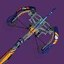 | 威能 | 10 | 0.95 | 9.35 | 3075 | 2.319 | 1.22 | 1.35 | 16793 | 167925 | 17960 | 1 | 预设射第一发时已经叠满莫比乌斯箭袋 |
| 适配框架 · 火箭发射器 持久印象 + 收割者贡品 x4 + 强化煅炉眷属 Bug x3（轰鸣巨人）、集群猎人、银白重炮、哨兵圣盾 Bug、叛贼 Bug、理论输出 | 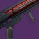 | 威能 | 9 | 1.183 | 9.464 | 3983 | 1.819 | 1.22 | 1.35 | 17068 | 153611 | 16231 | 2 | 实战难以复刻 预设用了 3 个 Bug 分别是 1. 煅炉眷属延长时间 2. 虚空泰坦反复举盾以达到旧月鞋效果 3. 叛贼 Perk 转移（+30% 爆炸伤害） |
| 攻击型框架 · 火箭发射器 集束炸弹 + 元素磨砺 x5 + 失时弹匣（光芒复仇）、集群猎人、银白重炮、集束炸弹表现正常、边打边劫、叛贼 Bug | 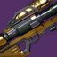 | 威能 | 9 | 1.1 | 8.8 | 3614 | 1.552 | 1.22 | 1.35 | 13214 | 118926 | 13514 | 3 | 集束弹表现正常约 20% 伤害加成 叛贼 Perk 转移 Bug（+30% 爆炸伤害） |
| 利维坦之息 · 弓箭 弓手节奏、莫比乌斯箭袋、银白箭袋、理论输出 | 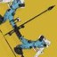 | 威能 | 14 | 1.333 | 17.329 | 2170 | 3.125 | 1.22 | 1.35 | 15972 | 223610 | 12904 | 4 | 预设射第一发时已经叠满莫比乌斯箭袋+弓手节奏 无伤大雅 DPS 仍然是第一梯队 |
| 二象性 · 霰弹枪 破冰者切配装 Bug、80% 触发率、理论输出 | 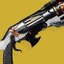 | 特殊 | 8 | 3.3 | 29.7 | 34437 | 44768 | 358145 | 12059 | 5 | 实战难以复刻 二象性+破冰者切配装 Bug 不用洛伦兹驱动器是因为据说破冰者比较稳 | |||
| 攻击型框架 · 火箭发射器 集束炸弹 + 元素磨砺 x5 + 失时弹匣（光芒复仇）、集群猎人、银白重炮、集束炸弹表现正常、边打边劫 | 威能 | 9 | 1.1 | 8.8 | 3044 | 1.552 | 1.22 | 1.35 | 11131 | 100178 | 11384 | 6 | ||
| 高冲击力框架 · 弩 重型弩弹、嫉妒军械库 + 高地 + 强化加速突击（好建议）、莫比乌斯箭袋 | 威能 | 10 | 0.95 | 9.35 | 1917 | 2.319 | 1.22 | 1.35 | 10468 | 104681 | 11196 | 7 | 预设射第一发时已经叠满莫比乌斯箭袋 | |
| 需求层级 · 弓箭 指引光环 x3、莫比乌斯箭袋、银白箭袋、火力战队补正、理论输出 | 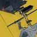 | 主武器 | ∞ | 1.017 | 1342 | 3.375 | 1.22 | 1.35 | 11150 | ∞ | 10964 | 8 | 模拟多人抢点燃问题 预设第一发时已经叠满莫比乌斯箭袋 | |
| 高冲击力框架 · 弩 重型弩弹、嫉妒军械库 + 高地 + 强化加速突击（好建议）、指引光环 x3 | 威能 | 10 | 0.95 | 9.35 | 3075 | 1.325 | 1.22 | 1.35 | 9596 | 95957 | 10263 | 9 | 预设射第一发时已经叠满莫比乌斯箭袋 | |
| 攻击型框架 · 火箭发射器 滑行射击 + 强化腹背受敌（核心终结 IV）、集群猎人、银白重炮 | 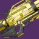 | 威能 | 9 | 1.1 | 8.8 | 2550 | 1.613 | 1.22 | 1.35 | 9688 | 87195 | 9909 | 10 | 实战难以复刻 原因是使用滑行射击 |
| 真相 · 火箭发射器 原型真理探索者、收割者贡品 x4、银白重炮 | 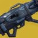 | 威能 | 14 | 0.533 | 13.333 | 2254 | 1.61 | 1.22 | 1.35 | 8545 | 119636 | 8973 | 11 | 总伤计算预设先叠好原型真理探索者再捡满备弹 |
| 攻击型框架 · 刀剑 1 重 1 轻、锯齿刀锋 + 强化伤害模块、狂暴 x3 + 强化转向 x30 + 强化煅炉眷属 Bug x3（史赛克的老练）、银白利刃、理论输出 | 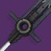 | 威能 | 31 | 2.417 | 16.916 | 2606 | 3.089 | 1.22 | 1.35 | 18962 | 146952 | 8687 | 12 | 实战难以复刻 原因是事前需要叠满转向+狂暴 煅炉眷属延长时间 Bug |
| 攻击型框架 · 火箭发射器 失时弹匣、嫉妒军械库 + 元素磨砺 x5（光芒复仇）、集群猎人、银白重炮 | 威能 | 9 | 1.1 | 10.2 | 2550 | 1.552 | 1.22 | 1.35 | 9322 | 83902 | 8226 | 13 | ||
| 攻击型框架 · 火箭发射器 集束炸弹 + 元素磨砺 x5 + 失时弹匣（光芒复仇）、集群猎人、银白重炮、集束炸弹表现正常 | 威能 | 9 | 1.1 | 12.7 | 3044 | 1.552 | 1.22 | 1.35 | 11131 | 100178 | 7888 | 14 | 集束弹表现正常约 20% 伤害加成 | |
| 粘性电浆手雷 死亡阵痛 x5、感受烈焰、黏附冲击 | 手雷 | ∞ | 1.567 | 1783 | 1.6 | 2 | 12242 | ∞ | 7812 | 15 | 实战难以复刻 | |||
| 隐秘追猎 · 狙击步枪 预先触发凯德的复仇、星界夜鹰、狙击手冥想、燃烧步枪弹药、烈日爆发、预设每个弹匣都至少捡到两个能量球 | 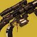 | 特殊 | 20 | 0.65 | 17.651 | 2293 | 1.15 | 1.22 | 1.35 | 6678 | 133562 | 7567 | 16 | 预设第一枪前已经叠满狙击手冥想 预设每个弹匣都能捡到两个能量球 |
| 英勇利刃 · 刀剑 右键投掷来回命中两次、光明利刃 x3、进攻形态、强力利刃 III、陀螺核心（烈日）、占据上风、银白利刃、理论输出 | 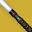 | 特殊 | ∞ | 1.983 | 5293 | 1.15 | 1.22 | 1.35 | 14988 | ∞ | 7558 | 17 | 实战难以复刻 原因是基本上没有这样的环境可以让首领吃一来一回的投掷伤害 | |
| 投掷飞锤 · 近战 雪上加霜、生物强化、咆哮烈焰 x3、包括武器属性低于 101 的速射框架霰弹枪伤害 | 近战 | ∞ | 0.917 | 564 | 6.15 | 6875 | ∞ | 7498 | 18 | 武器属性压到 101 以下以减少其对 DPS 的影响 | ||||
| 需求层级 · 弓箭 指引光环、莫比乌斯箭袋、银白箭袋、理论输出 | 主武器 | ∞ | 1.017 | 917 | 3.375 | 1.22 | 1.35 | 7619 | ∞ | 7492 | 19 | 点燃不稳定 | ||
| 抓钩 · 近战 雪上加霜、生物强化、组合打击 x3、勇气琢面、电弧复合 | 近战 | ∞ | 1.5 | 778 | 1.15 | 9.652 | 11231 | ∞ | 7487 | 20 | 实战难以复刻 原因是肘击要打好挺难的 组合打击让勾爪同时被视为电属性近战 因此可以吃到勇气琢面和电弧复合 勇气琢面伤害加算 电弧复合伤害乘算 | |||
| 攻击型框架 · 狙击步枪 加大弹匣、精准连击 + 强化转向 x30 + 强化加速突击（巴拉巴拉）、联网瞄准 x5、狙击手冥想、动能合成填装 | 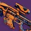 | 特殊 | 15 | 0.833 | 11.662 | 832 | 2.794 | 1.22 | 1.35 | 5726 | 85884 | 7364 | 21 | 实战难以复刻 原因是事前需要叠满转向 预设第一枪前已经叠满狙击手冥想 |
| 隐秘追猎 · 狙击步枪 预先触发凯德的复仇、星界夜鹰、狙击手冥想、预设每个弹匣都至少捡到两个能量球 | 特殊 | 20 | 0.65 | 17.651 | 2293 | 1.15 | 1.22 | 1.35 | 6494 | 129880 | 7358 | 22 | 预设第一枪前已经叠满狙击手冥想 | |
| 攻击型框架 · 刀剑 1 重 1 轻、锯齿刀锋 + 强化伤害模块、强化转向 x30 + 强化煅炉眷属 Bug x3（史赛克的老练）、银白利刃 | 威能 | 31 | 2.417 | 16.916 | 2606 | 2.599 | 1.22 | 1.35 | 15954 | 123642 | 7309 | 23 | 实战难以复刻 原因是事前需要叠满转向 煅炉眷属延长时间 Bug | |
| 攻击型框架 · 火箭发射器 超充弹匣 + 换挡 x5（异教徒）、集群猎人、银白重炮 | 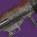 | 威能 | 9 | 1.1 | 11.6 | 2550 | 1.552 | 1.22 | 1.35 | 9322 | 83902 | 7233 | 24 | |
| 故我在 · 刀剑 铸造者框架、纯五度、锯齿刀锋、1 重 2 轻、光明利刃 x3、集群猎人、超凡、排除超凡 5% 加成、银白利刃、黎明副歌、烈日爆发 | 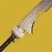 | 特殊 | 51 | 2.2 | 17.6 | 4901 | 1.15 | 1.22 | 1.35 | 14320 | 125168 | 7112 | 25 | |
| 精确重击框架 · 霰弹枪 突击弹匣、强化转向 x30 + 元素磨砺 x5（无声）、填装后摇取消 | 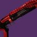 | 特殊 | 15 | 0.833 | 11.662 | 782 | 2.7 | 1.22 | 1.35 | 5202 | 78028 | 6691 | 26 | |
| 狼毒 · 刀剑 重轻轻 x4+1 重后切枪、砥砺刀锋 + 锯齿刀锋、燃烧野心、10 轻回满充能、全面爆发叠满纳米虫、银白利刃、烈日爆发、理论输出 | 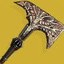 | 威能 | 68 | 18.967 | 47.934 | 32991 | 1.438 | 1.22 | 1.35 | 112802 | 320471 | 6686 | 27 | 实战难以复刻 原因是预设要有一个人先用全面爆发预先叠满纳米虫 使用超频只剩 0 秒切枪再切回来能回一半能量的手手法 |
| 伊邪那岐的重担 · 狙击步枪 包含 4 合 1 动作时间、拉旗前 4 合 1、狙击手冥想 | 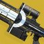 | 特殊 | 20 | 1.717 | 8.585 | 3346 | 1.15 | 1.22 | 1.35 | 9476 | 56856 | 6623 | 28 | 预设第一枪前已经叠满狙击手冥想 |
| 千语 · 融合步枪 骨灰余烬、催化、黎明副歌、粒子重建 | 威能 | 11 | 1.733 | 18.33 | 4656 | 1.22 | 1.35 | 10965 | 120613 | 6580 | 29 | |||
| 适配框架 · 狙击步枪 附加弹匣、斩首武器 + 强化转向 x30（拥抱身份）、联网瞄准 x5、狙击手冥想 | 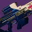 | 特殊 | 15 | 0.65 | 11.434 | 658 | 3.066 | 1.22 | 1.35 | 4970 | 74552 | 6520 | 30 | 实战难以复刻 原因是事前需要叠满转向 预设第一枪前已经叠满狙击手冥想 |
| 干扰武器 · 狙击步枪 聚合充能 x3 + 强化加速突击（翻新 A499）、联网瞄准 x5、狙击手冥想 | 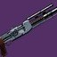 | 威能 | 20 | 1.367 | 25.973 | 1985 | 1.807 | 1.22 | 1.35 | 8445 | 168909 | 6503 | 31 | 预设第一枪前已经叠满狙击手冥想 |
| 动态热量武器 · 狙击步枪 电离散热器、动态热量限制器、斩首武器 + 诱导推销 + 强化帝国效忠 x3（阴谋淬砺）、联网瞄准 x5、狙击手冥想 | 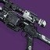 | 特殊 | 26 | 0.433 | 13.717 | 674 | 2.06 | 1.22 | 1.35 | 3420 | 88910 | 6482 | 32 | 预设第一枪前已经叠满狙击手冥想 |
| 速射框架 · 狙击步枪 战术弹匣、强化事不过四 + 转向 x30 + 参考框架 x5（转瞬长矛）、联网瞄准 x5、狙击手冥想 | 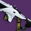 | 特殊 | 15 | 0.433 | 7.379 | 449 | 2.852 | 1.22 | 1.35 | 3157 | 47348 | 6417 | 33 | 实战难以复刻 原因是事前需要叠满转向 预设第一枪前已经叠满狙击手冥想 |
| 真相 · 火箭发射器 原型真理探索者、银白重炮 | 威能 | 14 | 0.533 | 13.333 | 2254 | 1.15 | 1.22 | 1.35 | 6104 | 85454 | 6409 | 34 | 总伤计算预设先叠好原型真理探索者再捡满备弹 | |
| 高冲击力框架 · 弩 重型弩弹、嫉妒军械库 + 高地 + 强化加速突击（好建议） | 威能 | 10 | 0.95 | 9.35 | 1917 | 1.325 | 1.22 | 1.35 | 5982 | 59818 | 6398 | 35 | 预设射第一发时已经叠满莫比乌斯箭袋 | |
| 阿克瑞斯传说 · 霰弹枪 身体伤害、战嚎炮管、电弧复合 | 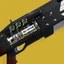 | 威能 | 16 | 1.183 | 20.333 | 1990 | 1.725 | 1.22 | 1.35 | 8086 | 129383 | 6363 | 36 | |
| 攻击型框架 · 刀剑 1 重 1 轻、锯齿刀锋 + 强化伤害模块、强化集体行动 + 元素磨砺 x5（永世英雄）、集群猎人、银白利刃 | 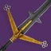 | 威能 | 51 | 2.417 | 24.165 | 2927 | 2.065 | 1.22 | 1.35 | 14232 | 152997 | 6331 | 37 | 实战难以复刻 原因是需要稳定元素拾取物触发集体行动 （或许只有电泰坦能做到） |
| 轻质框架 · 刀剑 1 重 2 轻、锯齿刀锋 + 强化伤害模块、强化燃烧野心 + 混沌重塑 x2（三色矛头蝮-4bl）、集群猎人、银白利刃 | 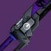 | 威能 | 67 | 2.042 | 26.54 | 3246 | 1.552 | 1.22 | 1.35 | 12090 | 164424 | 6195 | 38 | |
| 狼毒 · 刀剑 重轻轻 x4+1 重后切枪、砥砺刀锋 + 锯齿刀锋、燃烧野心、10 轻回满充能、银白利刃、烈日爆发、黎明副歌 | 威能 | 64 | 18.967 | 47.934 | 37960 | 1.15 | 1.22 | 1.35 | 105030 | 296708 | 6190 | 39 | 使用超频只剩 0 秒切枪再切回来能回一半能量的手法 | |
| 融合手雷 死亡阵痛 x5、火焰之触、骨灰余烬、感受烈焰、黏附冲击 | 手雷 | ∞ | 1.567 | 1842 | 1.223 | 2 | 9665 | ∞ | 6168 | 40 | 实战难以复刻 | |||
| 隐秘追猎 · 狙击步枪 预先触发凯德的复仇、星界夜鹰、狙击手冥想 | 特殊 | 20 | 0.65 | 21.152 | 2293 | 1.15 | 1.22 | 1.35 | 6494 | 129880 | 6140 | 41 | 预设第一枪前已经叠满狙击手冥想 | |
| 冷酷无情 · 融合步枪 刺激、两次击杀 | 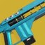 | 特殊 | 17 | 0.516 | 11.7 | 1681 | 1.22 | 1.35 | 4139 | 70355 | 6013 | 42 | 使用填装前杀一只小怪的手法两次 | |
| 遗赠 · 刀剑 1 重 1 轻、锯齿刀锋、强化震颤反馈 + 强化腹背受敌、光明利刃 x3、集群猎人、银白利刃 | 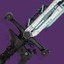 | 威能 | 71 | 1.7 | 23.8 | 2432 | 1.631 | 1.22 | 1.35 | 9614 | 142101 | 5971 | 43 | |
| 波形框架 · 刀剑 一直右键、锯齿刀锋 + 强化伤害模块、无情打击 + 强化腹背受敌 + 坚韧 x20（毒鲉）、集群猎人、银白利刃 | 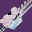 | 威能 | 63 | 1.65 | 31.35 | 2318 | 1.794 | 1.22 | 1.35 | 9794 | 186093 | 5936 | 44 | 实战难以复刻 原因是要先叠满 20 层起源特性 |
| 风暴手雷 强化手雷 x2、暴雷之触、量级火花、感受烈焰 | 手雷 | ∞ | 1.567 | 3203 | 1.35 | 9274 | ∞ | 5918 | 45 | |||||
| 干扰武器 · 狙击步枪 聚合充能 x3 + 强化加速突击（翻新 A499）、狙击手冥想 | 威能 | 20 | 1.367 | 25.973 | 1985 | 1.592 | 1.22 | 1.35 | 7441 | 148819 | 5730 | 46 | 预设第一枪前已经叠满狙击手冥想 | |
| 遗赠 · 刀剑 1 重 1 轻、锯齿刀锋、强化震颤反馈 + 元素磨砺 x5、光明利刃 x3、集群猎人、银白利刃 | 威能 | 71 | 1.7 | 23.8 | 2432 | 1.552 | 1.22 | 1.35 | 9166 | 135481 | 5692 | 47 | ||
| 波形框架 · 刀剑 一直右键、锯齿刀锋 + 强化伤害模块、无情打击 + 强化元素磨砺 x5 + 坚韧 x20（毒鲉）、集群猎人、银白利刃 | 威能 | 63 | 1.65 | 31.35 | 2318 | 1.708 | 1.22 | 1.35 | 9325 | 177169 | 5651 | 48 | 实战难以复刻 原因是要先叠满 20 层起源特性 | |
| 动态热量武器 · 狙击步枪 电离散热器、动态热量限制器、斩首武器 + 诱导推销 + 强化帝国效忠 x3（阴谋淬砺）、狙击手冥想 | 特殊 | 26 | 0.433 | 13.717 | 674 | 1.791 | 1.22 | 1.35 | 2974 | 77313 | 5636 | 49 | 预设第一枪前已经叠满狙击手冥想 | |
| 投掷飞锤 · 近战 生物强化、咆哮烈焰 x3、最大投掷距离 | 近战 | ∞ | 0.883 | 564 | 5.15 | 4908 | ∞ | 5558 | 50 | 实战难以复刻 原因是预设要丢最大距离的锤子 | ||||
| 轻质框架 · 刀剑 1 重 2 轻、锯齿刀锋 + 强化伤害模块、强化燃烧野心 + 混沌重塑 x2（三色矛头蝮-4bl）、集群猎人、银白利刃、烈日爆发 | 威能 | 67 | 2.042 | 26.54 | 2891 | 1.552 | 1.22 | 1.35 | 10682 | 145269 | 5474 | 51 | ||
| 挽歌 · 刀剑 2 轻 1 重、光明利刃 x3、燃烧野心、银白利刃、黎明副歌、烈日爆发 | 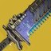 | 威能 | 65 | 2.506 | 40.091 | 5014 | 1.15 | 1.22 | 1.35 | 13579 | 217268 | 5419 | 52 | |
| 攻击型框架 · 霰弹枪 身体伤害、突击弹匣、失时弹匣、强化聚合充能 + 战嚎炮管（裁决定论）、包括近战伤害、电弧复合 | 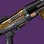 | 特殊 | 19 | 1 | 20.081 | 1010 | 2.294 | 1.22 | 1.35 | 5705 | 108395 | 5398 | 53 | |
| 寒冬之啮 · 近战 近战、2 轻 1 动作取消 Combo、组合打击 x3、特里同之罪、排除碎冰伤害、静铃无响、理论输出 | 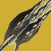 | 近战 | ∞ | 1.467 | 541 | 7.85 | 7899 | ∞ | 5385 | 54 | 实战难以复刻 原因是需要续组合打击 | |||
| 故我在 · 刀剑 铸造者框架、纯五度、锯齿刀锋、1 重 2 轻、光明利刃 x3、集群猎人、超凡、排除超凡 5% 加成、银白利刃、烈日爆发 | 特殊 | 51 | 2.2 | 17.6 | 3808 | 1.15 | 1.22 | 1.35 | 11003 | 94548 | 5372 | 55 | ||
| 精密框架 · 线性融合步枪 强化电池、充能大师之作、强化超级杀戮弹匣 + 邪剑守则 x4 + 异端行径（揭纱露眼） | 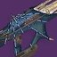 | 威能 | 20 | 1.023 | 24.641 | 1239 | 2.268 | 1.22 | 1.35 | 6618 | 132366 | 5372 | 56 | 实战难以复刻 原因是需要叠超级杀戮弹匣+邪剑守则 |
| 狼毒 · 刀剑 重轻轻 x4+1 重后切枪、砥砺刀锋 + 锯齿刀锋、燃烧野心、10 轻回满充能、银白利刃、烈日爆发 | 威能 | 64 | 18.967 | 47.934 | 32991 | 1.15 | 1.22 | 1.35 | 90463 | 257006 | 5362 | 57 | 使用超频只剩 0 秒切枪再切回来能回一半能量的手手法 | |
| 烈日手雷 炎阳护腕、火焰之触、骨灰余烬、一直丢 | 手雷 | ∞ | 5.95 | 15570 | 31901 | ∞ | 5361 | 58 | 实战难以复刻 | |||||
| 千语 · 融合步枪 骨灰余烬、催化、粒子重建 | 威能 | 11 | 1.733 | 18.33 | 3765 | 1.22 | 1.35 | 8868 | 97543 | 5321 | 59 | |||
| 铸造者框架 · 刀剑 1 重 2 轻、锯齿刀锋 + 强化伤害模块、无情打击 + 强化腹背受敌（噩兆）、光明利刃 x3、集群猎人、银白利刃 | 威能 | 63 | 2.2 | 26.4 | 2868 | 1.631 | 1.22 | 1.35 | 11013 | 139428 | 5281 | 60 | ||
| 压缩波形框架 · 弹鼓榴弹发射器 嫉妒军械库 + 元素磨砺 x5（爱与死亡）、包含直击伤害、动能冲击 | 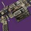 | 威能 | 26 | 0.508 | 15.526 | 978 | 1.35 | 1.22 | 1.35 | 3131 | 81413 | 5244 | 61 | |
| 挽歌 · 刀剑 3 轻 1 重 1 不格档轻击、光明利刃 x3、燃烧野心、组合银白利刃、刀剑风暴连击、黎明副歌、理论输出 | 威能 | 65 | 3.583 | 37.897 | 6304 | 1.15 | 1.22 | 1.35 | 18047 | 197074 | 5200 | 62 | 预设组合银白利刃全程触发（不太可能发生） | |
| 轻质框架 · 刀剑 1 重 2 轻、锯齿刀锋 + 强化伤害模块、斩首武器 + 旋风利刃（阴沉利爪）、集群猎人、银白利刃 | 威能 | 76 | 2.042 | 30.622 | 2612 | 1.645 | 1.22 | 1.35 | 10118 | 157840 | 5154 | 63 | ||
| 故我在 · 刀剑 涡流框架、意外缓刑、回火刀锋、一直右键、光明利刃 x3、集群猎人、超凡、排除超凡 5% 加成、银白利刃 | 特殊 | 51 | 1.75 | 21 | 2936 | 1.15 | 1.22 | 1.35 | 8314 | 108087 | 5147 | 64 | ||
| 故我在 · 刀剑 波形框架、意外缓刑、锯齿刀锋、一直右键、光明利刃 x3、集群猎人、超凡、排除超凡 5% 加成、银白利刃、首领贴墙 | 特殊 | 51 | 1.65 | 19.8 | 2767 | 1.15 | 1.22 | 1.35 | 7836 | 101863 | 5145 | 65 | ||
| 高冲击力框架 · 弩 重型弩弹、强化聚合充能 x3（沉没）、指引光环 x3、银白箭袋 | 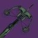 | 威能 | ∞ | 1.883 | 3075 | 1.33 | 1.22 | 1.35 | 9632 | ∞ | 5115 | 66 | ||
| 适配框架 · 刀剑 1 重 1 轻、锯齿刀锋 + 强化伤害模块、无情打击 + 元素磨砺 x5（静待回归）、光明利刃 x3、集群猎人、银白利刃 | 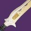 | 威能 | 63 | 1.775 | 24.85 | 2335 | 1.552 | 1.22 | 1.35 | 8538 | 126198 | 5078 | 67 | |
| 死亡使者 · 火箭发射器 最大投射物高度、银白重炮 | 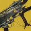 | 威能 | 11 | 2.3 | 23 | 3900 | 1.15 | 1.22 | 1.35 | 10563 | 116197 | 5052 | 68 | 预设最大距离以最大化伤害 |
| 铸造者框架 · 刀剑 1 重 2 轻、锯齿刀锋 + 强化伤害模块、无情打击 + 元素磨砺 x5（暗夜恐惧）、光明利刃 x3、集群猎人、银白利刃 | 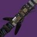 | 威能 | 63 | 2.2 | 26.4 | 2868 | 1.552 | 1.22 | 1.35 | 10485 | 132742 | 5028 | 69 | |
| 监护人 · 霰弹枪 天生在途、精准连击、动能合成填装 | 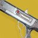 | 特殊 | ∞ | 0.45 | 0.45 | 749 | 1.22 | 1.22 | 1.35 | 2249 | ∞ | 4997 | 70 | |
| 第四骑士 · 霰弹枪 身体伤害、电弧复合 | 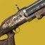 | 特殊 | 20 | 2.917 | 9.551 | 840 | 1.15 | 1.22 | 1.35 | 2377 | 47544 | 4978 | 71 | |
| 挽歌 · 刀剑 2 轻 1 重、光明利刃 x3、燃烧野心、银白利刃、烈日爆发 | 威能 | 65 | 2.506 | 40.091 | 4574 | 1.15 | 1.22 | 1.35 | 12389 | 198217 | 4944 | 72 | ||
| 二象性 · 霰弹枪 3 发腰射身体伤害叠加黑翼之上 x3 后转为开镜（独头喷）形态输出 | 特殊 | 17 | 0.917 | 15.038 | 1758 | 1.22 | 1.35 | 4328 | 73569 | 4892 | 73 | |||
| 攻击型框架 · 狙击步枪 加大弹匣、精准连击 + 元素磨砺 x5 + 强化加速突击（巴拉巴拉）、联网瞄准 x5、狙击手冥想、动能合成填装 | 特殊 | ∞ | 0.833 | ∞ | 832 | 1.978 | 1.22 | 1.35 | 4054 | ∞ | 4867 | 74 | ||
| 故我在 · 刀剑 轻质框架、意外缓刑、锯齿刀锋、1 重 2 轻、光明利刃 x3、集群猎人、超凡、排除超凡 5% 加成、银白利刃 | 特殊 | 51 | 2.042 | 20.415 | 3293 | 1.15 | 1.22 | 1.35 | 9326 | 98852 | 4842 | 75 | ||
| 速射框架 · 霰弹枪 身体伤害、元素磨砺 x5 + 煅炉眷属 Bug x3（威胁等级）、动能合成填装 | 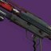 | 特殊 | ∞ | 0.433 | 0.433 | 537 | 1.582 | 1.22 | 1.35 | 2094 | ∞ | 4835 | 76 | 煅炉眷属延长时间 Bug |
| 精密框架 · 线性融合步枪 强化电池、充能大师、强化超级杀戮弹匣 + 元素磨砺 x5 + 异端行径（揭纱露眼） | 威能 | 20 | 1.023 | 24.641 | 1239 | 2.041 | 1.22 | 1.35 | 5956 | 119130 | 4835 | 77 | 实战难以复刻 原因是需要叠超级杀戮弹匣 | |
| 适配框架 · 弹鼓榴弹发射器 尖刺榴弹、嫉妒军械库 + 强化诱导推销（苦乐参半）、电弧复合、动能冲击 | 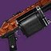 | 威能 | 26 | 0.503 | 15.416 | 822 | 1.468 | 1.22 | 1.35 | 2865 | 74503 | 4833 | 78 | |
| 狼毒 · 刀剑 重轻轻 x4+1 重后切枪、砥砺刀锋 + 锯齿刀锋、10 轻回满充能、银白利刃 | 威能 | 64 | 18.967 | 47.934 | 29849 | 1.15 | 1.22 | 1.35 | 80845 | 230085 | 4800 | 79 | 使用超频只剩 0 秒切枪再切回来能回一半能量的手手法 | |
| 双尾狐 · 火箭发射器 骨灰余烬、黎明副歌、银白重炮 | 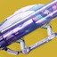 | 威能 | 10 | 2.217 | 19.953 | 3902 | 1.15 | 1.1 | 1.35 | 9529 | 95292 | 4776 | 80 | |
| 速射框架 · 狙击步枪 战术弹匣、失时弹匣、强化事不过四 + 元素磨砺 x5（普莱蒂斯的复仇）、联网瞄准 x5、狙击手冥想、动能合成填装 | 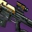 | 特殊 | ∞ | 0.433 | ∞ | 449 | 1.866 | 1.22 | 1.35 | 2065 | ∞ | 4769 | 81 | |
| 千语 · 融合步枪 催化、粒子重建 | 威能 | 11 | 1.733 | 18.33 | 3372 | 1.22 | 1.35 | 7942 | 87367 | 4766 | 82 | |||
| 勘探者 · 弹鼓榴弹发射器 一般首领模型、电弧复合、动能冲击 | 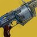 | 威能 | 30 | 0.383 | 17.907 | 1035 | 1.15 | 1.22 | 1.35 | 2827 | 84807 | 4736 | 83 | 此枪疑似会根据首领体型而伤害有所浮动 |
| 涡流框架 · 刀剑 一直右键、锯齿刀锋 + 强化伤害模块、狂乱 + 强化腹背受敌（陨落铡刀）、光明利刃 x3、集群猎人、银白利刃 | 威能 | 62 | 1.75 | 28 | 1869 | 1.875 | 1.22 | 1.35 | 8256 | 132100 | 4718 | 84 | ||
| 适配框架 · 狙击步枪 附加弹匣、强化回转弹药 + 元素磨砺 x5（宁静）、联网瞄准 x5、狙击手冥想、动能合成填装 | 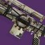 | 特殊 | ∞ | 0.65 | 0.65 | 658 | 1.866 | 1.22 | 1.35 | 3025 | ∞ | 4654 | 85 | 预设第一枪前已经叠满狙击手冥想 |
| 投掷飞锤 · 近战 雪上加霜、生物强化、咆哮烈焰 x3、包括武器属性低于 101 的速射框架霰弹枪伤害 | 近战 | ∞ | 2.533 | 1283 | 4.5 | 11786 | ∞ | 4653 | 86 | 武器属性压到 101 以下以减少其对 DPS 的影响 | ||||
| 挽歌 · 刀剑 3 轻 1 重 1 不格档轻击 Combo、光明利刃 x3、燃烧野心、组合银白利刃、刀剑风暴连击 | 威能 | 65 | 3.583 | 37.897 | 5595 | 1.15 | 1.22 | 1.35 | 16125 | 176080 | 4646 | 87 | ||
| 蠕虫低语 · 狙击步枪 轻声呼吸、狙击手冥想、燃烧步枪弹药、烈日爆发 | 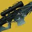 | 威能 | 38 | 0.801 | 29.637 | 1251 | 1.15 | 1.22 | 1.35 | 3544 | 134672 | 4544 | 88 | |
| 速射框架 · 弹鼓榴弹发射器 尖刺榴弹、嫉妒军械库 + 元素磨砺 x5（VS 寒冷抑制）、动能冲击 | 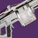 | 威能 | 29 | 0.403 | 14.425 | 703 | 1.35 | 1.22 | 1.35 | 2258 | 65487 | 4540 | 89 | |
| 微型导弹框架 · 后膛榴弹发射器 尖刺榴弹、滑行射击 + 元素磨砺 x5（机巧纬线）、能量加速、理论输出 | 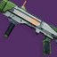 | 特殊 | 20 | 0.667 | 12.673 | 853 | 1.35 | 1.22 | 1.35 | 2871 | 57426 | 4531 | 90 | 实战难以复刻 原因是使用滑行射击 |
| 悦耳之声 · 线性融合步枪 0 层纺锤开始、进化丝线、包括线虫伤害、集群战术（预设集群战术从 3 层叠起） | 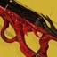 | 特殊 | 21 | 1.45 | 31.483 | 1318 | 1.279 | 1.22 | 1.35 | 4149 | 142542 | 4528 | 91 | 集群战术可无限叠，上限并非两层 |
| 涡流框架 · 刀剑 一直右键、锯齿刀锋 + 强化伤害模块、狂乱 + 元素磨砺 x5（陨落铡刀）、光明利刃 x3、集群猎人、银白利刃 | 威能 | 62 | 1.75 | 28 | 1869 | 1.785 | 1.22 | 1.35 | 7860 | 125765 | 4492 | 92 | ||
| 适配框架 · 狙击步枪 附加弹匣、强化事不过四 + 元素磨砺 x5 + 强化加速突击（崇拜）、联网瞄准 x5、狙击手冥想 | 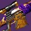 | 特殊 | 46 | 0.65 | 31.584 | 658 | 1.9 | 1.22 | 1.35 | 3081 | 141720 | 4487 | 93 | 预设第一枪前已经叠满狙击手冥想 |
| 适配框架 · 弹鼓榴弹发射器 尖刺榴弹、嫉妒军械库 + 元素磨砺 x5（边缘交通）、动能冲击 | 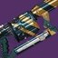 | 威能 | 26 | 0.503 | 15.416 | 822 | 1.35 | 1.22 | 1.35 | 2636 | 68541 | 4446 | 94 | |
| 挽歌 · 刀剑 2 轻 1 重 1 不格档轻击 Combo、光明利刃 x3、燃烧野心、银白利刃 | 威能 | 65 | 3.116 | 40.508 | 5078 | 1.15 | 1.22 | 1.35 | 13754 | 178796 | 4414 | 95 | ||
| 挽歌 · 刀剑 2 轻 1 重 1 不格档轻击 Combo、光明利刃 x3、燃烧野心、组合银白利刃、刀剑风暴连击 | 威能 | 65 | 4.167 | 37.503 | 6424 | 1.15 | 1.22 | 1.35 | 18371 | 165335 | 4409 | 96 | ||
| 需求层级 · 弓箭 指引光环 x3、银白箭袋、火力战队补正 | 主武器 | ∞ | 1.017 | 1342 | 1.35 | 1.22 | 1.35 | 4460 | ∞ | 4385 | 97 | 模拟多人抢点燃问题 | ||
| 彼岸新域 · 狙击步枪 大师 20 层开始、跑步取消拉拴后摇、动能合成、狙击手冥想 | 特殊 | ∞ | 1.133 | ∞ | 1029 | 1.955 | 1.22 | 1.35 | 4953 | ∞ | 4372 | 98 | 预设第一枪前已经叠满狙击手冥想 | |
| 蠕虫低语 · 狙击步枪 轻声呼吸、狙击手冥想 | 威能 | 38 | 0.801 | 29.637 | 1251 | 1.15 | 1.22 | 1.35 | 3388 | 128747 | 4344 | 99 | ||
| 冷酷无情 · 融合步枪 | 特殊 | 19 | 0.516 | 12.567 | 1166 | 1.22 | 1.35 | 2871 | 54552 | 4341 | 100 | |||
| 压缩波形框架 · 弹鼓榴弹发射器 嫉妒军械库 + 元素磨砺 x5（爱与死亡）、动能冲击 | 威能 | 26 | 0.508 | 15.526 | 804 | 1.35 | 1.22 | 1.35 | 2581 | 67103 | 4322 | 101 | ||
| 单人合唱 · 自动步枪 腰射模式、在一定距离外 | 特殊 | 225 | 0.267 | 17.748 | 692 | 1.22 | 1.35 | 1704 | 76676 | 4320 | 102 | 需要站在一定距离外让投射物分叉 | ||
| 轻质框架 · 霰弹枪 身体伤害、突击弹匣、元素磨砺 x5（星界虚无）、填装后摇取消 | 特殊 | 18 | 0.692 | 12.212 | 880 | 1.35 | 1.22 | 1.35 | 2927 | 52680 | 4314 | 103 | ||
| 狼王 · 霰弹枪 狼群出动、腰射、精确伤害、包含点燃伤害 | 特殊 | 189 | 0.079 | 20.43 | 186 | 1.22 | 1.35 | 458 | 86586 | 4238 | 104 | |||
| 高冲击力框架 · 狙击步枪 跑步取消拉拴后摇、元素磨砺 x5 + 强化加速突击（舵手）、联网瞄准 x5、狙击手冥想 | 特殊 | 48 | 1.067 | 54.813 | 1029 | 1.901 | 1.22 | 1.35 | 4815 | 231130 | 4217 | 105 | 预设第一枪前已经叠满狙击手冥想 | |
| 帝喾预言 · 弓箭 来回切换模式、因果箭矢 x6、指引光环 x3、预设每两发点燃一次 | 主武器 | ∞ | 1.783 | 3016 | 1.22 | 1.35 | 7425 | ∞ | 4164 | 106 | ||||
| 利维坦之息 · 弓箭 弓手节奏 | 威能 | 14 | 1.333 | 17.329 | 2170 | 1.22 | 1.35 | 5111 | 71555 | 4129 | 107 | |||
| 精密框架 · 线性融合步枪 加速线圈、充能大师之作、强化事不过四 + 元素磨砺 x5 + 异端行径（揭纱露眼）、粒子重建 | 威能 | 42 | 0.983 | 42.754 | 1214 | 1.458 | 1.22 | 1.35 | 4170 | 175121 | 4096 | 108 | ||
| 脉冲手雷 强化手雷 x2、暴雷之触、量级火花、感受烈焰 | 手雷 | ∞ | 1.567 | 2215 | 1.35 | 6415 | ∞ | 4094 | 109 | |||||
| 悦耳之声 · 线性融合步枪 0 层纺锤开始、包括线虫伤害、集群战术（预设集群战术从 3 层叠起） | 特殊 | 21 | 1.45 | 31.483 | 1318 | 1.279 | 1.22 | 1.35 | 4149 | 128701 | 4088 | 110 | 集群战术可无限叠，上限并非两层 | |
| 千语 · 融合步枪 骨灰余烬、粒子重建 | 威能 | 11 | 1.733 | 18.33 | 2885 | 1.22 | 1.35 | 6795 | 74750 | 4078 | 111 | |||
| 千语 · 融合步枪 骨灰余烬、催化、粒子重建、不包含点燃 | 威能 | 11 | 1.733 | 18.33 | 2875 | 1.22 | 1.35 | 6770 | 74472 | 4063 | 112 | 预设点燃全被抢完 | ||
| 英勇利刃 · 刀剑 3 轻 1 重 combo、进攻形态、强力利刃 III、冲击核心（烈日）、动能合成、组合银白利刃、刀剑风暴连击 | 特殊 | ∞ | 3 | 4075 | 1.15 | 1.22 | 1.35 | 12187 | ∞ | 4062 | 113 | |||
| 速射框架 · 狙击步枪 战术弹匣、强化事不过四 + 元素磨砺 x5（全知之眼）、联网瞄准 x5、狙击手冥想、燃烧步枪弹药、烈日爆发 | 特殊 | 59 | 0.433 | 31.699 | 449 | 1.799 | 1.22 | 1.35 | 2164 | 127650 | 4027 | 114 | 预设第一枪前已经叠满狙击手冥想 | |
| 库尔之影 · 近战 腐化近战、组合打击 x3、生物强化 | 近战 | ∞ | 0.728 | 242 | 7.15 | 1 | 1 | 2924 | ∞ | 4018 | 115 | |||
| 堡垒 · 融合步枪 圣人之怒、包含近战时间 | 特殊 | 21 | 1.433 | 29.77 | 1592 | 1.45 | 1.22 | 1.35 | 5682 | 119327 | 4008 | 116 | ||
| 高冲击力框架 · 弓箭 重型弩弹、强化聚合充能 x3（沉没）、银白箭袋 | 威能 | ∞ | 1.883 | 1917 | 1.663 | 1.22 | 1.35 | 7505 | ∞ | 3986 | 117 | |||
| 适配点射框架 · 线性融合步枪 加速线圈、充能大师之作、强化回转弹药 + 混沌重塑 x2（蔷薇的蔑视）、粒子重建 | 威能 | 21 | 1.367 | 26.44 | 1575 | 1.35 | 1.22 | 1.35 | 5007 | 105143 | 3977 | 118 | ||
| 挽歌 · 刀剑 2 轻 1 重 1 不格档轻击 Combo、光明利刃 x3、银白利刃 | 威能 | 65 | 3.116 | 40.508 | 4561 | 1.15 | 1.22 | 1.35 | 12353 | 160593 | 3964 | 119 | ||
| 彼岸新域 · 狙击步枪 大师 20 层开始、集结屏障、狙击手冥想 | 特殊 | 43 | 1.283 | 53.886 | 1029 | 1.955 | 1.22 | 1.35 | 4953 | 212985 | 3953 | 120 | 预设第一枪前已经叠满狙击手冥想 | |
| 双尾狐 · 火箭发射器 骨灰余烬、银白重炮 | 威能 | 10 | 2.217 | 19.953 | 3192 | 1.15 | 1.1 | 1.35 | 7796 | 77957 | 3907 | 121 | ||
| 睡者之吼 · 线性融合步枪 | 威能 | 16 | 1.3 | 22.5 | 2329 | 1.22 | 1.35 | 5484 | 87747 | 3900 | 122 | |||
| 抓钩 · 近战 雪上加霜、战争旗帜、生物强化 | 近战 | ∞ | 1.5 | 778 | 5.775 | 5843 | ∞ | 3895 | 123 | 实战难以复刻 原因是肘击要打好挺难的 | ||||
| 寄生虫 · 弹鼓榴弹发射器 嫉妒军械库、首发 x20 层 | 威能 | 18 | 1.45 | 24.65 | 2032 | 1.22 | 1.35 | 4785 | 95708 | 3883 | 124 | |||
| 阿格尔的权杖 · 追踪步枪 意志实体、指挥琢面、严酷折射 | 特殊 | 485 | 0.067 | 31.495 | 101 | 1.22 | 1.35 | 249 | 120982 | 3841 | 125 | |||
| 适配框架 · 偃月 近战、2 轻 1 重动作取消 Combo、组合打击 x3、战争旗帜、特里同之罪、紧逼近战（意外复苏）、理论输出 | 近战 | ∞ | 1.467 | 430 | 7.6 | 5517 | ∞ | 3761 | 126 | 实战难以复刻 原因是需要的条件太多了 | ||||
| 速射框架 · 狙击步枪 战术弹匣、强化事不过四 + 元素磨砺 x5（全知之眼）、联网瞄准 x5、狙击手冥想 | 特殊 | 59 | 0.433 | 31.699 | 449 | 1.799 | 1.22 | 1.35 | 1991 | 117486 | 3706 | 127 | 预设第一枪前已经叠满狙击手冥想 | |
| 弑后者 · 线性融合步枪 回转弹药、战斗瞄具 | 威能 | 21 | 1.233 | 26.26 | 1966 | 1.22 | 1.35 | 4631 | 97261 | 3704 | 128 | |||
| 隐秘追猎 · 狙击步枪 预先触发凯德的复仇、狙击手冥想 | 特殊 | 20 | 0.65 | 21.985 | 1432 | 1.15 | 1.22 | 1.35 | 4056 | 81119 | 3690 | 129 | ||
| 法夫纳 · 线性融合步枪 包括量子新星充能时间+范围伤害、消耗 9 发子弹 | 威能 | 18 | 1.6 | 16.333 | 2528 | 1.22 | 1.35 | 6226 | 58657 | 3591 | 130 | |||
| D.A.R.C.I. · 狙击步枪 联网瞄准 x5、目标锁定、包括震颤、狙击手冥想 | 威能 | 31 | 0.433 | 20.59 | 875 | 1.15 | 1.22 | 1.35 | 2369 | 73429 | 3566 | 131 | 预设第一枪前已经叠满狙击手冥想 | |
| 彼岸新域 · 狙击步枪 大师 0 层开始、集结屏障、叠到泰斗前手动填装、狙击手冥想 | 特殊 | 43 | 1.283 | 55.686 | 1029 | 1.821 | 1.22 | 1.35 | 4613 | 198345 | 3562 | 132 | 预设第一枪前已经叠满狙击手冥想 | |
| 缩影 · 追踪步枪 超因果注入、严酷折射 | 威能 | 385 | 0.067 | 28.878 | 83 | 1.366 | 1.22 | 1.35 | 266 | 102579 | 3552 | 133 | ||
| 杀手之牙 · 霰弹枪 突击弹匣、包括追踪子弹 | 特殊 | 28 | 0.833 | 23.592 | 1206 | 1.22 | 1.35 | 2969 | 83139 | 3524 | 134 | |||
| 终局螺旋钻 · 线性融合步枪 诱导推销、线融模式 | 威能 | 21 | 1.067 | 23.539 | 1278 | 1.3 | 1.22 | 1.35 | 3912 | 82158 | 3490 | 135 | ||
| 千语 · 融合步枪 粒子重建 | 威能 | 11 | 1.733 | 18.33 | 2459 | 1.22 | 1.35 | 5791 | 63705 | 3475 | 136 | |||
| 云霄破击 · 狙击步枪 精准连击、排除电光充能伤害、狙击手冥想 | 特殊 | 46 | 0.433 | 25.021 | 664 | 1.15 | 1.22 | 1.35 | 1881 | 86535 | 3458 | 137 | ||
| 心影 · 刀剑 重击、暗地一击、光明利刃 x3、银白利刃 | 威能 | 63 | 2.016 | 30.24 | 2755 | 1.22 | 1.35 | 6488 | 103813 | 3433 | 138 | |||
| 轻质框架 · 后膛榴弹发射器 尖刺榴弹、涓流充能 + 收割者贡品 x4（拯救者的喝彩） | 特殊 | 20 | 0.667 | 12.673 | 629 | 1.4 | 1.22 | 1.35 | 2169 | 43373 | 3422 | 139 | ||
| 英勇利刃 · 刀剑 3 轻 1 重、进攻形态、强力利刃 III、动能合成、组合银白利刃、刀剑风暴连击 | 特殊 | ∞ | 3 | 3332 | 1.15 | 1.22 | 1.35 | 10082 | ∞ | 3361 | 140 | |||
| 精密框架 · 霰弹枪 身体伤害、没有备用弹匣、突击弹匣、重建 + 战嚎炮管（末日先知）、填装后摇取消 | 特殊 | 19 | 0.833 | 16.596 | 787 | 1.5 | 1.22 | 1.35 | 2907 | 55236 | 3328 | 141 | ||
| 精密框架 · 霰弹枪 身体伤害、没有备用弹匣、突击弹匣、重建 + 换挡 x5（末日先知）、填装后摇取消 | 特殊 | 19 | 0.833 | 14.994 | 787 | 1.35 | 1.22 | 1.35 | 2616 | 49713 | 3316 | 142 | ||
| 加拉尔号角 · 火箭发射器 银白重炮 | 威能 | 11 | 1.267 | 17.25 | 1892 | 1.15 | 1.22 | 1.35 | 5125 | 56374 | 3268 | 143 | ||
| 重型点射框架 · 霰弹枪 附加弹匣、强化高强度型弹药储备 + 诱导推销（纯粹回忆）、填装后摇取消 | 特殊 | 34 | 0.833 | 18.728 | 485 | 1.503 | 1.22 | 1.35 | 1794 | 60979 | 3256 | 144 | ||
| 轻质框架 · 霰弹枪 身体伤害、突击弹匣、重建 + 战嚎炮管（星界虚无）、填装后摇取消 | 特殊 | 18 | 0.692 | 18.063 | 880 | 1.5 | 1.22 | 1.35 | 3252 | 58534 | 3241 | 145 | ||
| 群居者 · 弹鼓榴弹发射器 | 威能 | 25 | 0.433 | 15.243 | 834 | 1.22 | 1.35 | 1964 | 49096 | 3221 | 146 | |||
| 精确重击框架 · 霰弹枪 突击弹匣、强化事不过四 + 元素磨砺 x5（无声）、填装后摇取消 | 特殊 | 34 | 0.833 | 27.489 | 782 | 1.35 | 1.22 | 1.35 | 2601 | 88432 | 3217 | 147 | ||
| 速射重弹框架 · 霰弹枪 快速命中 + 强化精准工具（龙䲢）、填装后摇取消 | 特殊 | 24 | 0.633 | 17.503 | 749 | 1.256 | 1.22 | 1.35 | 2316 | 55573 | 3175 | 148 | ||
| 黑色利爪 · 刀剑 2 重 2 轻、光明利刃 x3、银白利刃 | 威能 | 73 | 2.75 | 25.117 | 3141 | 1.15 | 1.22 | 1.35 | 8506 | 79745 | 3175 | 149 | ||
| 新马尔帕伊斯 · 脉冲步枪 预设每三发悬停 DoT 一次 | 特殊 | 27 | 0.892 | 24.657 | 1160 | 1.22 | 1.35 | 2856 | 77113 | 3127 | 150 | |||
| 破冰者 · 狙击步枪 狙击手冥想 | 特殊 | 10 | 1.233 | 11.097 | 1223 | 1.15 | 1.22 | 1.35 | 3464 | 34643 | 3122 | 151 | 预设第一枪前已经叠满狙击手冥想 | |
| 条件终局 · 霰弹枪 身体伤害、伤害取两发中的平均值 | 特殊 | 19 | 1.116 | 20.088 | 1422 | 1.135 | 1.35 | 3258 | 61897 | 3081 | 152 | |||
| 弑后者 · 线性融合步枪 回转弹药、射手瞄具 | 威能 | 21 | 1.15 | 24.366 | 1506 | 1.22 | 1.35 | 3546 | 74475 | 3056 | 153 | |||
| 死亡信使 · 后膛榴弹发射器 基本法则 | 特殊 | 20 | 1.55 | 29.45 | 1384 | 1.3 | 1.22 | 1.35 | 4429 | 88586 | 3008 | 154 | ||
| 龙息 · 火箭发射器 自填、复合推进剂 x5、黎明副歌、银白重炮 | 威能 | 11 | 5.1 | 51 | 5145 | 1.15 | 1.22 | 1.35 | 13935 | 153290 | 3006 | 155 | ||
| 需求层级 · 弓箭 指引光环、银白箭袋 | 主武器 | ∞ | 1.017 | 917 | 1.35 | 1.22 | 1.35 | 3048 | ∞ | 2997 | 156 | |||
| 适配框架 · 融合步枪 加速线圈、充能大师之作、涓流充能 + 换挡 x5 + 加速突击（主原料） | 特殊 | 23 | 1.225 | 27.667 | 1020 | 1.431 | 1.22 | 1.35 | 3596 | 82701 | 2989 | 157 | ||
| 速射框架 · 融合步枪 加速线圈、充能大师之作、重建 + 强化聚合充能（笛卡尔坐标）、粒子重建 | 特殊 | 22 | 0.9 | 19.367 | 803 | 1.33 | 1.22 | 1.35 | 2630 | 57855 | 2987 | 158 | ||
| 高冲击力框架 · 融合步枪 强化电池、充能大师之作、嫉妒刺客 + 受控连射（隐士） | 特殊 | 23 | 1.26 | 28.62 | 1264 | 1.191 | 1.22 | 1.35 | 3707 | 85266 | 2979 | 159 | ||
| 雷神 · 机枪 下调后预设只填装一次 | 威能 | 379 | 0.083 | 34.124 | 114 | 1.22 | 1.35 | 268 | 101659 | 2979 | 160 | |||
| 大序曲 · 机枪 预设追踪导弹叠满就用 | 威能 | 58 | 0.594 | 49.097 | 1059 | 1.22 | 1.35 | 2494 | 144658 | 2946 | 161 | |||
| 微型导弹框架 · 脉冲步枪 附加弹匣、涓流充能 + 元素磨砺 x5、加速突击（Ψ永恒 IV）、能量加速 | 特殊 | 14 | 1.05 | 13.65 | 793 | 1.419 | 1.22 | 1.35 | 2826 | 39562 | 2898 | 162 | ||
| 重型点射框架 · 霰弹枪 附加弹匣、事不过四 + 强化聚合充能 x3（奥术之拥） | 特殊 | 66 | 0.833 | 36.19 | 485 | 1.33 | 1.22 | 1.35 | 1587 | 104727 | 2894 | 163 | ||
| 异星噬菌 · 机枪 | 威能 | 39 | 0.5 | 23.634 | 736 | 1.22 | 1.35 | 1734 | 67645 | 2862 | 164 | |||
| 速射框架 · 霰弹枪 身体伤害、光照无影、战嚎炮管（完美悖论）、近战填装、不包含近战伤害 | 特殊 | 25 | 0.433 | 17.4 | 537 | 1.5 | 1.22 | 1.35 | 1985 | 49627 | 2852 | 165 | ||
| 传家宝 · 弓箭 一档充能、催化、银白箭袋 | 特殊 | 20 | 1.35 | 31.551 | 1335 | 1.35 | 1.22 | 1.35 | 4438 | 88751 | 2813 | 166 | ||
| 恶意触碰 · 斥候步枪 最后一发子弹开始计算、用枯萎囤积直击腐化、精准工具 | 主武器 | ∞ | 0.233 | 265 | 1.22 | 1.35 | 653 | ∞ | 2803 | 167 | ||||
| 攻击型框架 · 融合步枪 加速线圈、充能大师之作、强化回转弹药 + 换挡 x5（回火发电机） | 特殊 | 19 | 1.063 | 19.734 | 875 | 1.35 | 1.22 | 1.35 | 2908 | 55244 | 2799 | 168 | ||
| 精密框架 · 弓箭 弓手的智谋（噤声）、指引光环 x3 | 主武器 | ∞ | 0.867 | 985 | 1.22 | 1.35 | 2424 | ∞ | 2796 | 169 | ||||
| 传家宝 · 弓箭 二档充能、催化、银白箭袋 | 特殊 | 20 | 2 | 50.198 | 2095 | 1.35 | 1.22 | 1.35 | 6964 | 139286 | 2775 | 170 | ||
| 裂波者 · 追踪步枪 超充电池、引爆光束、严酷折射 | 特殊 | 500 | 0.067 | 32.5 | 56 | 1.35 | 1.22 | 1.35 | 177 | 88666 | 2728 | 171 | ||
| 攻击型框架 · 狙击步枪 附加弹匣、精准连击 + 事不过四（锐利之蓟）、联网瞄准 x5、狙击手冥想 | 特殊 | 107 | 0.833 | 93.218 | 832 | 1.159 | 1.22 | 1.35 | 2375 | 254164 | 2727 | 172 | 预设第一枪前已经叠满狙击手冥想 | |
| 精密框架 · 融合步枪 强化电池、充能大师之作、e. 丰盈满溢 + e. 聚合充能（渐速音-42）、粒子重建 | 特殊 | 22 | 1.254 | 27.034 | 1020 | 1.33 | 1.22 | 1.35 | 3342 | 73522 | 2720 | 173 | ||
| 不祥之兆 · 后膛榴弹发射器 腐化核合成、预设满狂暴值 | 特殊 | 35 | 0.65 | 22.1 | 695 | 1.22 | 1.35 | 1711 | 59890 | 2710 | 174 | |||
| 回旋喝彩 · 火箭发射器 没有预期、完全充能、银白重炮 | 威能 | 7 | 6.983 | 41.898 | 6344 | 1.15 | 1.135 | 1.35 | 15986 | 111905 | 2671 | 175 | ||
| 传家宝 · 弓箭 满档充能、催化、银白箭袋 | 特殊 | 20 | 3.017 | 62.98 | 2508 | 1.35 | 1.22 | 1.35 | 8337 | 166743 | 2648 | 176 | ||
| 速射框架 · 偃月 没有备用弹匣、射弹、混沌重塑 x2 + 超级杀戮弹匣（滑溜运气） | 特殊 | 33 | 0.714 | 24.724 | 420 | 1.89 | 1.22 | 1.35 | 1956 | 64564 | 2611 | 177 | ||
| 适配框架 · 融合步枪 加速线圈、充能大师之作、强化回转弹药 + 受控连射（灵巫力量） | 特殊 | 22 | 1.037 | 22.377 | 893 | 1.191 | 1.22 | 1.35 | 2620 | 57638 | 2576 | 178 | ||
| 攻击型框架 · 机枪 附加弹匣、强化事不过四 + 强化目标锁定 + 强化致命失误（时间子句） | 威能 | 907 | 0.1 | 96.034 | 81 | 1.408 | 1.22 | 1.35 | 268 | 243302 | 2533 | 179 | ||
| 传家宝 · 弓箭 不充能、银白箭袋 | 特殊 | 20 | 1.083 | 22.483 | 856 | 1.35 | 1.22 | 1.35 | 2844 | 56885 | 2530 | 180 | ||
| 寒冬之啮 · 偃月 射弹 | 特殊 | 17 | 1.5 | 24 | 1469 | 1.22 | 1.35 | 3460 | 58815 | 2451 | 181 | |||
| 救赎之握 · 弹鼓榴弹发射器 不充能 | 威能 | 25 | 0.617 | 19.308 | 795 | 1.22 | 1.35 | 1872 | 46806 | 2424 | 182 | |||
| 最终警告 · 手枪 15 发半充能然后点射爆发、催化 | 主武器 | ∞ | 3.55 | 3457 | 1.22 | 1.35 | 8512 | ∞ | 2398 | 183 | ||||
| 劲弩 · 线性融合步枪 | 特殊 | 22 | 1.05 | 24.632 | 1086 | 1.22 | 1.35 | 2674 | 58835 | 2389 | 184 | |||
| 沃德克里夫线圈 · 火箭发射器 不包含电光充能伤害、银白重炮 | 威能 | 8 | 3.117 | 21.819 | 2403 | 1.15 | 1.22 | 1.35 | 6509 | 52072 | 2387 | 185 | ||
| 库尔之影 · 融合步枪 带腐化 | 特殊 | 24 | 1.04 | 27.282 | 1096 | 1.22 | 1.35 | 2698 | 64753 | 2373 | 186 | |||
| 救赎之握 · 弹鼓榴弹发射器 充能、迎接风暴 | 威能 | 25 | 1.283 | 35.544 | 1425 | 1.22 | 1.35 | 3356 | 83906 | 2361 | 187 | |||
| 速射框架 · 机枪 没有备用弹匣、战术弹匣、强化事不过四 + 强化目标锁定（改型冒险） | 威能 | 1162 | 0.067 | 90.885 | 57 | 1.366 | 1.22 | 1.35 | 184 | 214272 | 2358 | 188 | ||
| 追踪步枪 强化事不过四 + 强化目标锁定（阿卡西娅的沮丧）、纪念碑面具、严酷折射 | 特殊 | 1038 | 0.067 | 68.546 | 29 | 2.115 | 1.22 | 1.35 | 149 | 154783 | 2258 | 189 | ||
| 神圣裁决 · 追踪步枪 按着摁射、包含震颤、聚焦狂怒、严酷折射 | 特殊 | 470 | 0.067 | 33.455 | 48 | 1.35 | 1.22 | 1.35 | 161 | 75483 | 2256 | 190 | ||
| 焚天者誓约 · 斥候步枪 腰射、包含点燃、骨灰余烬、燃烧野心、黎明副歌 | 主武器 | ∞ | 8.65 | 7875 | 1.22 | 1.35 | 19390 | ∞ | 2242 | 191 | ||||
| 墓园双星 · 冲锋枪 目标锁定、傀儡野心 | 主武器 | ∞ | 4.6 | 4150 | 1.22 | 1.35 | 10218 | ∞ | 2221 | 192 | ||||
| 全面爆发 · 脉冲步枪 预设满层纳米虫、回转弹药、附加弹匣、大约 DPS | 主武器 | ∞ | 15.517 | 13902 | 1.22 | 1.35 | 34230 | ∞ | 2206 | 193 | 纳米虫伤害难以精准计算 | |||
| 单人合唱 · 自动步枪 瞄准模式、精确伤害 | 特殊 | 225 | 0.267 | 65.808 | 261 | 1.22 | 1.35 | 644 | 144867 | 2201 | 194 | |||
| 细分曲面 · 融合步枪 全程都有手雷吃、属性：不可约简、超凡、已排除升华（超凡）本身的 5% 伤害加成、理论输出 | 特殊 | 22 | 3.133 | 70.761 | 2849 | 1.22 | 1.35 | 7015 | 154322 | 2181 | 195 | 实战难以复刻 | ||
| 龙息 · 火箭发射器 自填、复合推进剂 x5、银白重炮 | 威能 | 11 | 5.1 | 51 | 3725 | 1.15 | 1.22 | 1.35 | 10090 | 110995 | 2176 | 196 | ||
| 适配框架 · 机枪 附加弹匣、强化事不过四 + 强化目标锁定（锤头） | 威能 | 747 | 0.133 | 112.303 | 100 | 1.365 | 1.22 | 1.35 | 322 | 240671 | 2143 | 197 | ||
| 微型导弹框架 · 后膛榴弹发射器 内爆弹药、重建 + 元素磨砺 x5（经纬仪）、能量加速 | 特殊 | 20 | 0.667 | 27.667 | 853 | 1.35 | 1.22 | 1.35 | 2871 | 57426 | 2076 | 198 | ||
| 先驱者 · 手枪 | 特殊 | 70 | 0.283 | 24.777 | 298 | 1.22 | 1.35 | 734 | 51349 | 2072 | 199 | |||
| 高冲击力框架 · 机枪 战术弹匣、事不过四 + 强化目标锁定（执政官的雷霆） | 威能 | 755 | 0.167 | 141.716 | 118 | 1.364 | 1.22 | 1.35 | 379 | 285810 | 2017 | 200 | ||
| 零号修订 · 脉冲步枪 4 连发循环然后 6 发猎人踪迹、加大弹匣、事不过四、斩首武器 | 主武器 | ∞ | 12.667 | 10325 | 1.22 | 1.35 | 25422 | ∞ | 2007 | 201 | ||||
| 攻击型框架 · 偃月 没有备用弹匣、射弹、强化转向 x30（苍鹭） | 特殊 | 34 | 1 | 34.098 | 554 | 1.441 | 1.22 | 1.35 | 1965 | 66817 | 1960 | 202 | ||
| 双重火力框架 · 后膛榴弹发射器 尖刺榴弹、元素磨砺 x5（狂野飞禽） | 特殊 | 20 | 0.667 | 28.5 | 840 | 1.35 | 1.22 | 1.35 | 2791 | 55819 | 1959 | 203 | ||
| 冰霜巨人 · 融合步枪 | 特殊 | 24 | 1.189 | 31.676 | 1048 | 1.22 | 1.35 | 2581 | 61950 | 1956 | 204 | |||
| 恶意触碰 · 斥候步枪 发射枯萎+15 发循环 | 主武器 | ∞ | 5.383 | 4203 | 1.22 | 1.35 | 10348 | ∞ | 1922 | 205 | ||||
| 维王者之剑 · 偃月 射弹 | 特殊 | 32 | 0.714 | 23.61 | 573 | 1.22 | 1.35 | 1411 | 45160 | 1913 | 206 | |||
| 土卫十三 · 融合步枪 | 特殊 | 19 | 1.356 | 26.779 | 1095 | 1.22 | 1.35 | 2695 | 51208 | 1912 | 207 | |||
| 零号修订 · 脉冲步枪 2 连发循环然后 6 发猎人踪迹、加大弹匣、事不过四、斩首武器 | 主武器 | ∞ | 15.717 | 12129 | 1.22 | 1.35 | 29864 | ∞ | 1900 | 208 | ||||
| 青龙协同之刃 · 偃月 预先叠加、闪电追踪弹然后 6 发循环 | 特殊 | 29 | 2.917 | 28.3 | 703 | 1.22 | 1.35 | 1731 | 50199 | 1774 | 209 | |||
| 波形框架 · 后膛榴弹发射器 强化转向 x30 + 诱导推销（自制）、理论输出 | 特殊 | 20 | 1.5 | 28.5 | 461 | 2.223 | 1.22 | 1.35 | 2524 | 50483 | 1771 | 210 | 实战难以复刻 原因是事前需要叠满转向 | |
| 适配框架 · 偃月 没有备用弹匣、射弹、混沌重塑 x2（拒绝召唤） | 特殊 | 33 | 0.91 | 30.485 | 482 | 1.35 | 1.22 | 1.35 | 1604 | 52919 | 1736 | 211 | ||
| 命定混沌 · 机枪 目标锁定 | 威能 | 376 | 0.167 | 80.937 | 156 | 1.22 | 1.35 | 367 | 137936 | 1704 | 212 | |||
| 鲁扎库之役 · 机枪 | 威能 | 300 | 10.45 | 65.7 | 157 | 1.22 | 1.35 | 369 | 110752 | 1686 | 213 | |||
| 微型导弹框架 · 手枪 精密、高爆弹药、涓流充能 + 换挡 x5（蒙恩）、能量加速 | 特殊 | 44 | 0.616 | 26.488 | 297 | 1.35 | 1.22 | 1.35 | 1009 | 44395 | 1676 | 214 | ||
| 全面爆发 · 脉冲步枪 0 层纳米虫开始、回转弹药、附加弹匣 | 主武器 | ∞ | 15.517 | 10349 | 1.22 | 1.35 | 25483 | ∞ | 1642 | 215 | ||||
| 极星长枪 · 斥候步枪 骨灰余烬、黎明副歌 | 主武器 | ∞ | 0.4 | 262 | 1.22 | 1.35 | 644 | ∞ | 1611 | 216 | ||||
| 牵引器火炮 · 霰弹枪 | 威能 | 18 | 0.733 | 14.161 | 522 | 1.22 | 1.35 | 1231 | 22149 | 1564 | 217 | |||
| 法定继承人 · 机枪 | 威能 | 440 | 0.067 | 37.779 | 56 | 1.22 | 1.35 | 132 | 58096 | 1538 | 218 | |||
| 泰拉巴 · 冲锋枪 贪食野兽 | 主武器 | ∞ | 3.233 | 1963 | 1.22 | 1.35 | 4833 | ∞ | 1495 | 219 | ||||
| 阿莱索尼姆 · 后膛榴弹发射器 | 频率 | ∞ | 1.517 | 873 | 1.22 | 1.35 | 2149 | ∞ | 1417 | 220 | ||||
| 隼月 · 手炮 连续打、超因果射击 x7 | 主武器 | ∞ | 5.1 | 2874 | 1.22 | 1.35 | 7078 | ∞ | 1388 | 221 | ||||
| 汤米的火柴盒 · 自动步枪 骨灰余烬 | 主武器 | ∞ | 10.4 | 5725 | 1.22 | 1.35 | 14096 | ∞ | 1355 | 222 | ||||
| 混乱无序 · 弹鼓榴弹发射器 两发、催化 | 频率 | 29 | 15.05 | 225.75 | 6737 | 1.3 | 1.22 | 1.35 | 20627 | 299097 | 1325 | 223 | ||
| 鼠王 · 手枪 鼠党 x5 | 主武器 | ∞ | 3.35 | 1964 | 1.22 | 1.35 | 4204 | ∞ | 1255 | 224 | ||||
| 北极星 · 追踪步枪 开镜、严酷折射 | 主武器 | ∞ | 9.483 | 3554 | 1.35 | 1.22 | 1.35 | 11815 | ∞ | 1246 | 225 | |||
| 终局螺旋钻 · 线性融合步枪 预设预先放好炮台、标记目标、诱导推销、炮台模式 | 频率 | 21 | 1.692 | 165.816 | 680 | 1.3 | 1.22 | 1.35 | 2081 | 203955 | 1230 | 226 | ||
| 枯骨鳞片 · 冲锋枪 | 主武器 | ∞ | 4.367 | 2135 | 1.22 | 1.35 | 5257 | ∞ | 1204 | 227 | ||||
| 极星长枪 · 斥候步枪 骨灰余烬 | 主武器 | ∞ | 0.4 | 191 | 1.22 | 1.35 | 470 | ∞ | 1175 | 228 | ||||
| 引力子尖刺 · 手炮 每三发来回切换模式循环、时空校准 | 主武器 | ∞ | 5.683 | 2862 | 1.135 | 1.35 | 6556 | ∞ | 1154 | 229 | ||||
| 冥府三头犬+1 · 自动步枪 精确伤害、0 距离 | 主武器 | ∞ | 6.167 | 2871 | 1.22 | 1.35 | 7068 | ∞ | 1146 | 230 | ||||
| 三度迭代 · 斥候步枪 16 发标记射弹 | 主武器 | ∞ | 7.667 | 3510 | 1.22 | 1.35 | 8643 | ∞ | 1127 | 231 | ||||
| 赴险者 · 冲锋枪 电弧导体、理论输出 | 主武器 | ∞ | 0.067 | 30 | 1.22 | 1.35 | 74 | ∞ | 1100 | 232 | 实战难以复刻 原因是实战难以续电弧导体 | |||
| 三度迭代 · 斥候步枪 合并弹药然后 15 发标记射弹 | 主武器 | ∞ | 9.05 | 3861 | 1.22 | 1.35 | 9506 | ∞ | 1050 | 233 | ||||
| 极星长枪 · 斥候步枪 | 主武器 | ∞ | 0.4 | 170 | 1.22 | 1.35 | 418 | ∞ | 1045 | 234 | ||||
| 焚天者誓约 · 斥候步枪 腰射、包含点燃、骨灰余烬、燃烧野心 | 主武器 | ∞ | 8.65 | 3619 | 1.22 | 1.35 | 8911 | ∞ | 1030 | 235 | ||||
| 战狮 · 后膛榴弹发射器 | 主武器 | ∞ | 1.517 | 613 | 1.22 | 1.35 | 1508 | ∞ | 994 | 236 | ||||
| 北极星 · 追踪步枪 腰射、严酷折射 | 主武器 | ∞ | 6.133 | 1824 | 1.35 | 1.22 | 1.35 | 6065 | ∞ | 989 | 237 | |||
| 糖果生意 · 自动步枪 | 主武器 | ∞ | 12.65 | 4893 | 1.22 | 1.35 | 12049 | ∞ | 952 | 238 | ||||
| 渎职 · 手炮 连续打、斩首武器 | 主武器 | ∞ | 8.217 | 3738 | 1.35 | 7545 | ∞ | 918 | 239 | |||||
| 风暴要塞 · 效果 最大合理范围内 DPS、闪电过载 | 频率 | ∞ | 1.46 | 678 | 1.5 | 1322 | ∞ | 905 | 240 | |||||
| 地狱火 · 炮台 领事投掷、一定距离外、骨灰余烬 | 频率 | ∞ | 1.317 | 678 | 1150 | ∞ | 873 | 241 | ||||||
| 瞬变风暴 · 自动步枪 42 发然后 3 榴弹循环 | 主武器 | ∞ | 7.567 | 2669 | 1.22 | 1.35 | 6572 | ∞ | 868 | 242 | ||||
| 同调 · 斥候步枪 20 发瞄准射弹然后 15 发电弧追踪弹、双重电光充能 Bug | 主武器 | ∞ | 16.883 | 5751 | ? | 1.22 | 1.35 | 14162 | ∞ | 839 | 243 | 双重电光充能 Bug | ||
| 遗言 · 手炮 腰射、连续打 | 主武器 | ∞ | 3.433 | 1404 | 1.35 | 2833 | ∞ | 825 | 244 | |||||
| 编织者之唤 · 效果 最大合理范围内 DPS、进化丝线 | 频率 | ∞ | 2.15 | 1120 | 1457 | ∞ | 677 | 245 | ||||||
| 米达多功能 · 斥候步枪 软件更新：弹药 | 主武器 | ∞ | 5.617 | 1181 | 1.3 | 1.22 | 1.35 | 3782 | ∞ | 673 | 246 | |||
| 区域拒止框架 · 后膛榴弹发射器 元素磨砺 x5（庆典飞行） | 频率 | 20 | 6 | 120 | 1137 | 1.35 | 1.22 | 1.35 | 3779 | 75585 | 630 | 247 | ||
| 风暴要塞 · 效果 最大合理范围内 DPS | 频率 | ∞ | 1.46 | 678 | 881 | ∞ | 604 | 248 | ||||||
| 地狱火 · 炮台 骨灰余烬 | 频率 | ∞ | 1.317 | 466 | 780 | ∞ | 592 | 249 | ||||||
| 枯萎囤积 · 后膛榴弹发射器 射地板 | 频率 | 20 | 4.65 | 93 | 1032 | 1.22 | 1.35 | 2541 | 50820 | 546 | 250 | |||
| 枯萎囤积 · 后膛榴弹发射器 直击 | 频率 | 20 | 9.783 | 195.66 | 2046 | 1.22 | 1.35 | 5038 | 100762 | 515 | 251 | |||
| 电弧之魂 · 炮台 增幅、勇气琢面 | 频率 | ∞ | 1.35 | 272 | 1.1 | 641 | ∞ | 475 | 252 | |||||
| 离子哨兵 · 炮台 频率火花、排除电光充能 DPS | 频率 | ∞ | 1 | 181 | 389 | ∞ | 389 | 253 | ||||||
| 刀剑风暴连击 每 3 个 Combo、银白利刃 | 频率 | ∞ | 9 | 1040 | 1.15 | 1.35 | 2747 | ∞ | 305 | 254 | ||||
| 电弧之魂 · 炮台 勇气琢面 | 频率 | ∞ | 1.833 | 163 | 1.1 | 385 | ∞ | 210 | 255 | |||||
| 震颤 · 效果 | 频率 | ∞ | 0.8 | 99 | 129 | ∞ | 161 | 256 | ||||||
| 瓦解 · 效果 正常频率、改良版瓦解 | 频率 | ∞ | 1.277 | 117 | 1.15 | 175 | ∞ | 137 | 257 | |||||
| 瓦解 · 效果 正常频率 | 频率 | ∞ | 1.277 | 117 | 153 | ∞ | 120 | 258 |